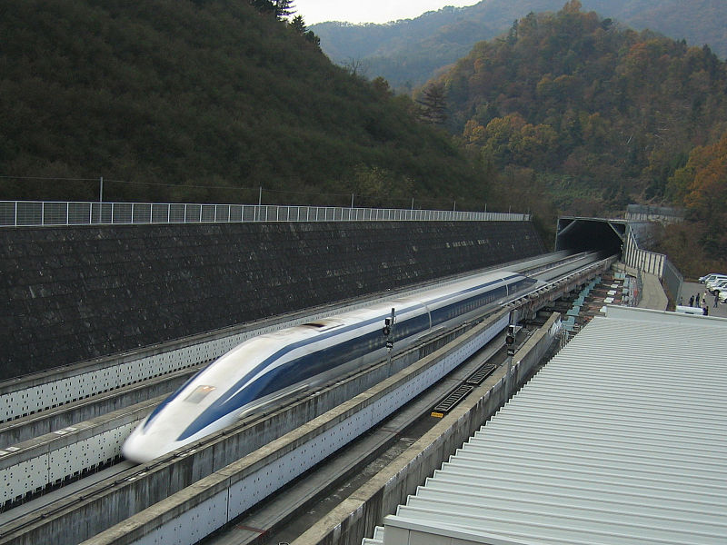

A maglev egy olyan vonat, amely elektromágnesekkel lebeg a síneken. Neve a magnetic levitation-ből jön ered, magyarul mágneses lebegés. Mivel lebeg, nem fékezi a súrlódás, bizonyos szakaszokon 400 km/h-t érhet el.
Sebességének köszönhetően, sokszor jobban megéri a maglevvel utazni, mint repülőgéppel, ami nagyon káros a környezetre. A hosszabb távú utazáson kívül rövid távon is jó lehet. Mivel a tradicionális tömegközlekedésnél gyorsabb, jó alternatíva lehet az autóval ingázók számára, amiknél sokkal környezetbarátabb.
Egy másik nagy környezetvédelmi előnye, hogy csendes. Manapság sok helyen nagy problémát okoz a zajszennyezés. Ez nem csak egyszerűen zavaró, hanem tudományos kutatások kimutatták, hogy egészségünkre káros hatással van. És nem csak ránk veszélyes ez, hanem minden más élőlényre is, mivel sok szempontban a hallásukra hagyatkoznak.
Ez a technológia már széleskörűen elterjedt Japánban, Kínában és Dél-Koreában, de a világ más pontjain még nincsen olyan szinten kiépítve a technológia.
Működése
Japán maglev 2005-ben